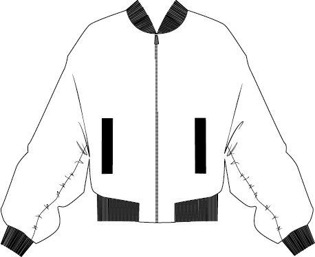

BOMBERJAKKE
style no. 7564
Månedens mønster for
øvede er en bomberjakke
med foer, lynlås og
lommer. Find tips til let-
tere udgaver i syvejled-
ningen.
Denne bomberjakke er lavet af fem forskellige tørklæder (ca 70x70 cm), der er syet sammen med et gammelt dynebetræk, for at give det mere stabilitet. Derudover er der brugt ca 1,5 m foer, en sort metallynlås - delbar 50 cm, cm 75 cm vlies, 50 cm rib og 2 m elastik bredde 0,5 cm og evt 0,75 m kontraststof. Du har kun brug for en almindelig husholdningssymaskine til denne opskrift.
Når du arbejder med så mange forskellige mønstre og kvaliteter, er det vigtigt at det første, du forholder dig til, er hvordan de bedst
sammensættes. Hvordan supplerer mønstrene hinanden, hvad skal fylde mest og hvad skal hellere bruges til kontrast? Derefter
kan du begynde at klippe ud - jeg foretrækker selv at gøre det gradvist og sy dem sammen løbende, så jeg ikke farer vildt i alle de
forskellige dele.
Da tørklæderne er så sarte, som de er, har jeg valgt at sy dem ovenpå et lag neutralt stof (her kan du fx bruge et lagen eller dyne-
betræk, hvis du vil gå fuld fart på redesign og upcycling). Det er udelukkende for at give bedre stabilitet, men vær opmærksom på,
at tørklæderne måske er semitransparante, så farven på baggrundsstoffet kan muligvis ses igennem.
Udover stabilitet, giver det ekrstra lag stof under tørklæderne også en lækker ekstra fylde, så din bomber får mere af den
’puffy-ness’, man forbinder med den type jakker.
Det næste step er lommerne - i dette tilfælde er har jeg lavet en listelomme, men du kan sagtens
vælge en påsyet lomme, eller helt vælge dem fra, hvis du foretrækker en nemmere udgave.
Når lommerne er færdige, er jakken klar til at blive syet sammen. Jeg har valgt sort kontraststof på undersiden af ærmener, men du
kan sagtens bare fortsætte med tørklæder eller vælge en anden farve.
Det sidste, der skal sys, indem jakken er færdig er foret. Jeg har valgt at der kun skal belægning på forstykkerne, fordi jeg synes
det giver er mere clean look.
Hvid du selv vil have en større holdbarhed i nakken, kan du trace halsudskæringen af på bagstykket og sy en belægningsdel på der
også. Du kan også tilføje dit eget mærke (kan købes i de fleste stofbutikker er på ikastetiket.dk).
Da det hele skal sys på vrangen lader jeg et hul i ærmet stå åbent, så jeg kan vende det hele igennem det. Pas på det ikke bliver
for småt, så dit foer sprækker, når du vender den.
Nu har du en fin uformelig bold, der bestemt ikke ligner en jakke. Men magien sker, når du forsigtig vender den gennem det åbne
hul i ærmet. Tag det stille og roligt, så stoffet ikke tager skade i processen.
Det allersidste, der skal gøres inden jakken er færdig, er at sy hullet sammen (enten i hånden for en helt usynligt fiinish eller ved at f
olde sømrummet ind og sy ovenpå med symaskinen).
Så er jakken færdig - og her er det endelige resultat.